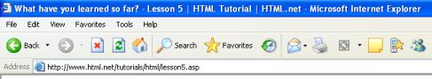
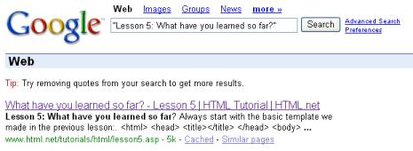

Beginnen Sie immer mit der Vorlage, die wir in der letzten Lektion erstellt haben:
<html>
<head>
<title></title>
</head>
<body>
</body>
</html>
Im Kopf (head) Ihrer Seite schreiben Sie immer einen Titel: <title>Titel Ihrer Seite</title>. Dieser Titel wird im oberen Balken des Browsers angezeigt:

Dieser Titel ist besonders wichtig, da dieser von Suchmaschinen (wie z.B. Google) u.a. genutzt wird, um Ihre Seite in den Suchindex aufzunehmen. Außerdem wird der Seitentitel in den Suchergebnissen angezeigt.

In den Körper (body) gehört der eigentliche Inhalt der Seite. Sie kennen schon einige der wichtigsten Elemente:
<p>Wird für Absätze benutzt.</p>
<b>Schreibt den Text in Fettschrift.</b>
<h1>Überschrift</h1>
<h2>Sub-Überschrift</h2>
<h3>Sub-Sub-Überschrift</h3>
Bitte denken Sie daran: Der einzige Weg HTML zu erlernen, ist durch ausprobieren. Im Englischen gibt es hierfür den Ausdruck “Trial and Error” – “Probieren und Fehler”. Aber keine Angst, Sie können weder Ihren Computer, noch das Internet durch irgendwelche Fehler im HTML-Quelltext zerstören. Also experimentieren Sie – das ist der beste Weg, um Erfahrungen zu sammeln.
Niemand wird toller Webseiten erstellen, bloß weil er die Beispiele in diesem Tutorial auswendig lernt. Dieses Tutorial soll lediglich eine Basis für das Verständnis der Elemente bieten – um besser zu werden, müssen Sie die Elemente in immer neuer und kreativer Art und Weise anordnen.
Also, probieren Sie einfach ein wenig mit dem, was Sie gelernt haben.
Probieren Sie einfach, ein paar eigene Seiten zu erstellen. Z.B. eine Seite mit einem Titel, einer Überschrift, ein wenig Text, einer Sub-Überschrift und noch ein wenig mehr Text. Es ist vollkommen in Ordnung im Tutorial nachzuschauen, während Sie Ihre ersten Seiten erstellen. Aber später können Sie ja probieren, eine Seite zu bauen, ohne nachzuschauen.